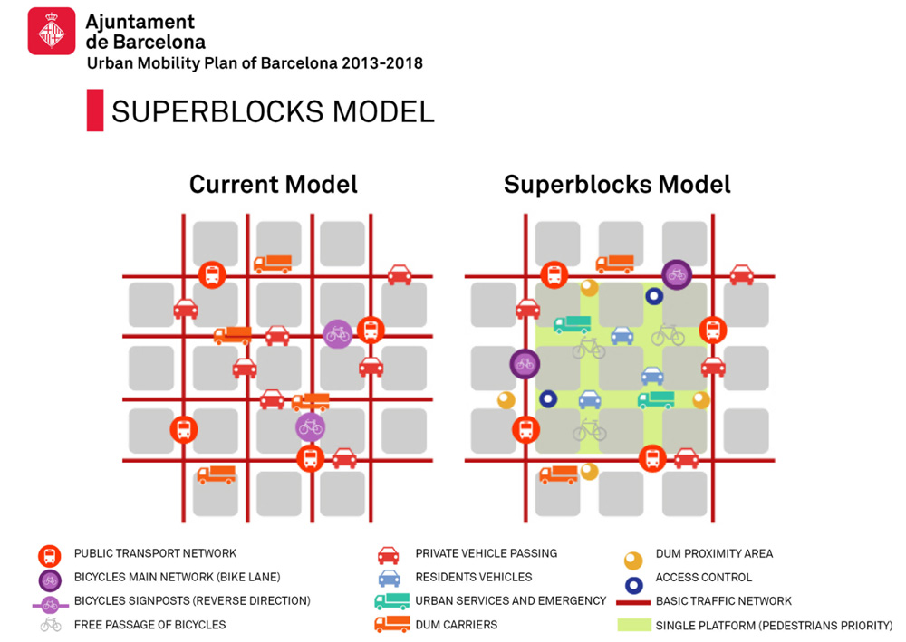
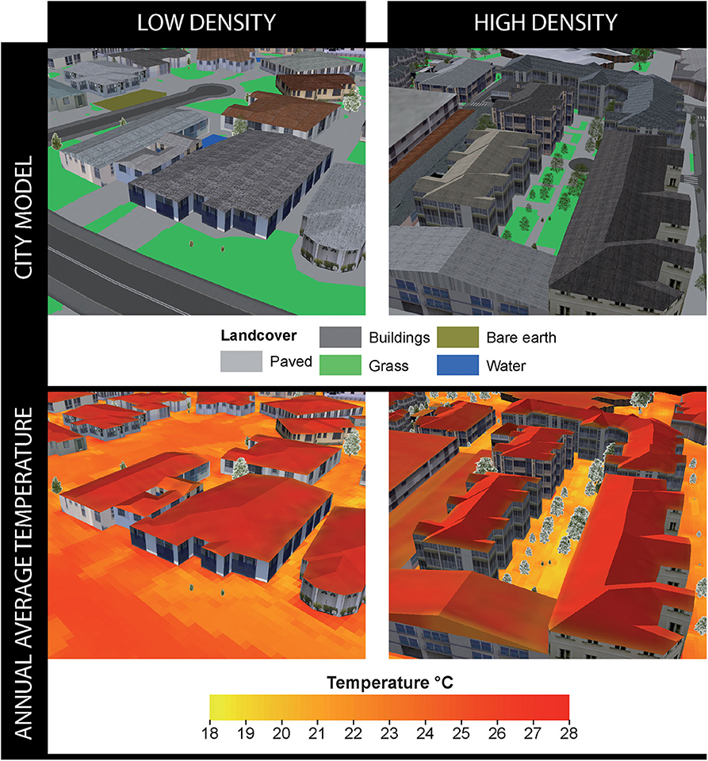
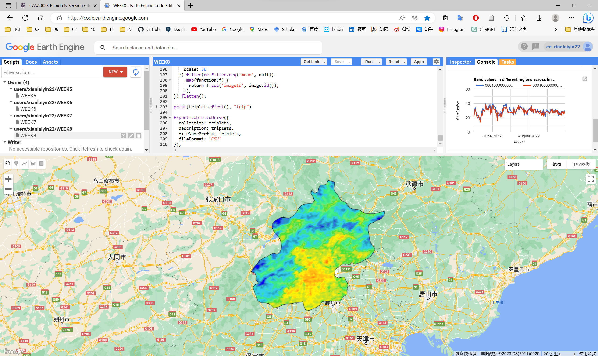
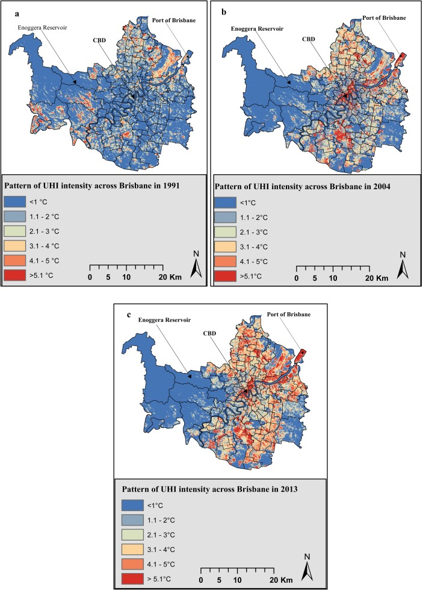
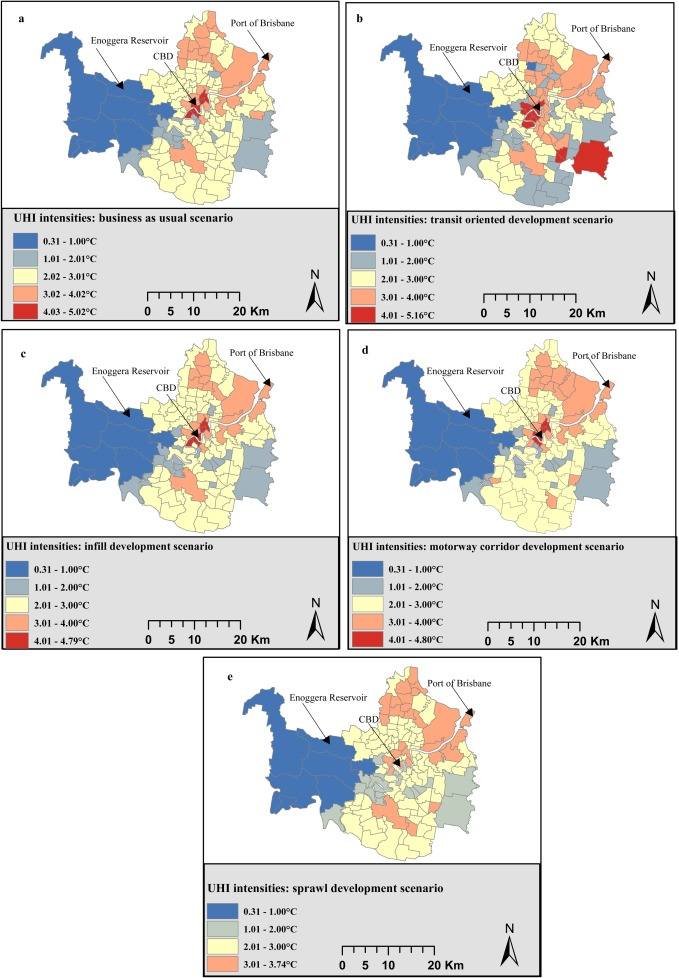

WEEK 8
Temperature and policy
This is a learning diary of CASA0023 WEEK 8, the lecture presentation is here, and the practical material is here.
1 Summary: lecture
The week began with a study of urban heat islands, followed by a number of remote sensing-related policy scenarios, and prompted reflection on policy development and implementation.

1.1 What is the Urban Heat Island
Urban areas obtain comparatively higher atmospheric and surface temperatures than surrounding rural areas

Factors
- More dark surfaces that retain heat
- Less vegetation that cools the environment (evapotranspiration and solar blocking)
- A low
Sky View Factor (SVF): radiation received (or emitted) by a planar surface to the radiation emitted (or received) by the entire hemispheric environment - Air speed, cloud cover, cyclic solar radiation, building material type and anthropogenic energy
How much does it cost
Social
Population adjusted excess mortality rates during the 1998 Shanghai heatwave were estimated at 27.3 per 100,000 within the urban area compared to only 7 per 100,000 in the exurban districts
Environmental
- Each degree of ambient temperature rise the increase in peak electricity load has been estimated between 0.45 and 4.6%, corresponding to around 21 W per degree rise per person
- Fossil fuel + pollution
Economic
Gross Domestic Product (GDP)= value of finished goods and services within a country- Percent GDP lost from UHI
- Under low Green House Gas scenario: 0.71% (in 2050) and 1.04% (in 2100)
- Under very high Green House Gas scenario: 0.80% (in 2050) and 1.79% (in 2100)
- UHI excluded from
Global Climate Change (GCC)scenarios - Hope: reduction in economic damages through policies
1.2 Global policy documents
New Urban Agenda
Standards and principles for planning, construction, development, management and urban improvement
Point 37
We commit ourselves to promoting safe, inclusive, accessible, green and quality public spaces, including streets, sidewalks and cycling lanes, squares, waterfront areas, gardens and parks, that are multifunctional areas for social interaction and inclusion, human health and well-being
Point 54
We commit ourselves to the generation and use of renewable and affordable energy and sustainable and efficient transport infrastructure and services, where possible, achieving the benefits of connectivity and reducing the financial, environmental and public health costs of inefficient mobility, congestion, air pollution, urban heat island effects and noise. We also commit ourselves to giving particular attention to the energy and transport needs of all people, particularly the poor and those living in informal settlements. We also note that reductions in renewable energy costs give cities and human settlements an effective tool to lower energy supply costs.
Point 79
We commit ourselves to promoting international, national, subnational and local climate action, including climate change adaptation and mitigation, and to supporting the efforts of cities and human settlements, their inhabitants and all local stakeholders as important implementers.
Sustainable Development Goals (SDG)
Targets with measurable indicators for monitoring
Goal 11
Make cities and human settlements inclusive, safe, resilient and sustainable
2018 SDG 11 issue brief
- Investing in parks and green spaces in urban areas will help to amelioratethe urban heat island effect and improve air quality in urban spaces.
- We work with national coordination units that support integrated urban planning and mapping and promote sustainable heating and cooling in related and cross-sector policy frameworks at multiple levels
COP26
Following 2021 United Nations Climate Change Conference in Glasgow - beat the heat handbook
1.3 Beat The Heat Handbook
If is the first full guide on UHI that suggests
- Baseline assessment
- Key factors to consider(p. 60) such as albedo, urban form, city zoning, green cover, heat maps (that mention satellite data) - Chapter 5
- First major document that calls for specific integration into policy
- Has many examples of mitigation…although
some aren't in response to the UHI, they were in place before / an associated benefit is temperature reduction
Superblocks

Background
- The idea has been proposed many times - dating back to Barcelona’s Plan Macià, 1932, and Josep Lluís Sert and Le Corbusier
- First superblock was in 1993
Superille (2016)
Community did not want- Cars = less business…but at that time only 5% used cars
Gentrification concerns- 15 minute cities? Council used social housing then 120 other places
Future
Transform mobility(2024 Urban Mobility Plan)- 67Km more
bus lanesthat align with superblocks Green axes
Medellín Green Corridors
- Rapid and uncontrolled growth
- 2016-2019 Government Plan = Medellín,
Environmental Urbanism - Restore green corridors
- 36 corridors
- Along 18 roads and waterways
- Reduced temperature 4 degrees Celsius
Sydney’s western suburbs
- Turn Down the Heat Strategy and Action Plan in 2018.
- An
in-depth assessmentof the cooling landscape was foundational to the development of this comprehensive Strategy and Action Plan and included aspects such as:- Assessment of the current state of urban heat in Western Sydney today;
- The future of urban heat in Western Sydney, highlighting the increasing severity and frequency of heat waves; impacts of urban heat on people, infrastructure, the economy and the environment; ans taking stock of the existing work across Western Sydney to address heat.
Reflections
Useful as it is first real guidance that states this should become part of city planning / policy
It doesn’t actually give specifics
- How are you meant to use data to solve these problems?
- What sort of
planning rulesneed to be changed - Do all cities have appropriate staff (a GIS team?) to solve these challenges
- Is there sufficient interest within local / metropolitan / national government
- Is there buy in from the public
Does provide some useful project ideas
- Assessing or determining the potential for reflective roofs / pavements / sidewalks
- Community engagement
- 2021 Cool Roads Trial in Western Sydney
- Accessibility to cool or green spaces / heat inequity
- Disparities in the way communities are planned, developed, and maintained
- Developing countries, which area has access to cooler spaces?
1.4 Metropolitan (city) policy / temperature reduction activities
Voluntary
- Chicago’s green roof
- Baltimore’s tree vouchers
Policy
Metropolitan strategies
- Perth and Peel 3.5 million
- The London Plan
- Singapore’s Master Plan
Local city mandates
- Seattle’s Green Factor
- Increases the amount of and improves the quality of landscaping in new development
- Development standards for certain areas require landscaping that meets a minimum Green Factor score
- You must reach a minimum score established by the zoning of your property
- e.g. “Commercial and Neighborhood Commercial (NC1, NC2, NC3, C1, C2): Minimum score 0.30”
- Baton Rouge’s landscape ordinance
- Fremantle’s Urban Forest:
- 20% canopy coverage (2020) – AUD 2.57million
- Maintain and enhance vegetation
- Increase quantity and distribution of green areas/tress (20% canopy coverage)
- Encourage greening of hard surfaces (e.g. parking) and in private realm
- First city to use data to inform their cooling / greening strategy
- Temperature image from one day in January
- Believe this is from Landsat data (see practical), 30 m data that has been aggregated to block (street block level)
1.5 Rethinking planning requirements
Perth Metropolitan Area
Follows the original landscape ordinance of 10% of any gross sub divisible area required for open space
- Unaltered since Stephenson– Hepburn metropolitan regional plan was legislated in 1955
- Based on population density values, with an assumed number of persons likely to be housed across various residential codes
- Grose (2017) = gross underestimtation of open space
Singapore
Singapore’s 2011 open space provisioning is defined as 4.05 m2 for every 56.0 m2 of gross floor area Detailed landscaping requirements such as grass coverage, tree girth, and minimum branches, yet excludes landscape arrangement conditions
A Data-Driven Approach for Mitigating Urban Heat

Mean radiant temperature (MRT), this is the temperature that surrounds a point
- Low density is the statistical area of Currambine – North of Perth.
- High density is from the city of Subiaco, West of Perth. Follows the Subiaco Redevelopment Scheme which supersedes the Metropolitan Region Scheme. It seeks improved social, economic and environmental development outcomes and transformed underutilized industrial land.
- In 2011 – population density was very similar, now Subiaco has more than double the density of Currambine with lower temperatures of between 1 and 0.6 degree Celsius dependent on land cover.
- Ran 4 scenarios:
- Original (existing) development (from satellite imagery)
- Proposed redevelopment as in the plan
- Proposed redevelopment removing trees
- Proposed redevelopment with trees covering the hottest pixels
- On average reduced temperature by 0.8 degrees Celsius across the study area.
Making sense of this
- There is a gap between global, metropolitan, local policy and data analysis
- The analysis needs to solve the problem and be usable
- Should we focus on
equalaccess/ distribution orequitableaccess / distribution or providing environmentaljustice - Are policies themselves the problem
- How could other cities use the same methods - e.g. could Sydney use the same temperature approach as Fremantle.
1.6 Approaching projects
First
- Search for EO data…we have seen (or will see) the following data
- Temperature
- Landcover
- Pollution
- Elevation
- Texture / Spectral
- Not constrained to this list
- Identify an issue (look at local policy documents)
- Look at global policy documents (to see the link)
Second
- What can be solved with the data
- What could this data contribute to another question (e.g. including it as a variable)
- How could the remotely sensed data be included within a data workflow
- Anything else as long as it includes EO data (or some sort, at some stage) and analysis for solving a policy question
2 Summary: practical
This week’s practical will consist mainly of the following:
- Exploring the UHI in GEE using Landsat and MODIS.
- Exploration of time series data
- Plot the average temperature in R to explore UHI.
In this week’s practical, I have used Landsat and MODIS data for Beijing and followed the practical’s instructions to plot the average temperature of Beijing to analyse and visualise the urban heat island (UHI) effect, in addition to plotting a time series of MODIS data.

3 Application
This week’s learning covers the theory and analysis of the urban heat island (UHI) effect and a discussion of policies related to remote sensing, so the application of remote sensing in response to UHI effect policies will be explored.
3.1 Applications of remote sensing in response to UHI
Remote sensing can be used to obtain a large amount of image data, thus enabling monitoring, analysis and assessment of the urban heat island effect, and thus responding to policy.
On the one hand, remote sensing can enable monitoring of the urban heat island effect. Monitoring can use satellite remote sensing and drone remote sensing technology to conduct high-precision infrared thermal imaging of the city and its surrounding areas to obtain the spatial distribution characteristics of the urban heat field. Based on the monitoring results, the government can formulate targeted policies and implement different regulatory measures for the urban heat island effect in different areas.
On the other hand, remote sensing can also evaluate the implementation of urban heat island effect policies. Through the time series data obtained by remote sensing technology, the urban heat island effect before and after the implementation of the policy can be compared and analysed, and the effect of the policy can then be evaluated.
3.2 Application case
Modelling the urban heat island effect of smart growth policy scenarios in Brisbane , Sourse: Deilami and Kamruzzaman (2017)
Smart growth policy has been identified as a panacea to tackle a range of undesirable outcomes of sprawl development. Various neighbourhood planning concepts have been developed following smart growth principles such as transit oriented development, and infill development. Existing empirical studies, however, do not answer to a key policy question: can smart growth policies reduce the urban heat island (UHI) effect? If so, what type of smart growth policy would be most effective? This research examined the questions by deriving five alternative neighbourhood planning scenarios for Brisbane for 2023: a) business as usual, b) transit oriented development (TOD), c) infill development, d) motorway corridor oriented development, and e) sprawl development. The research utilises Landsat remote sensing images of 1991, 2004, and 2013 to: first, estimate and validate a Geographically Weighted Regression model in order to identify statistically significant factors influencing the UHI intensities in Brisbane; and second, predict the UHI intensities of the five policy scenarios. Two factors were identified to have significant influence on the UHI intensities in Brisbane: population density, and porosity.

Results show that compared to the 2004 and 2013 levels, Brisbane will respectively experience a higher and lower levels of UHI effect in 2023, irrespective of the policy scenarios. On average, the infill development scenario, as a smart growth policy, has a marginally better potential to mitigate the UHI effect in Brisbane in 2023 compared to the sprawl development scenario conditional on the definition applied in this research. The UHI effect would be more equitably balanced spatially under the sprawl development scenario.

3.3 Case comments
Advantages or contribution
The study employs remote sensing techniques and geo-weighted regression models, which can provide effective estimates and predictions of the heat island effect and assist in scientific decision-making for policy.
The study considers the impact of different neighbourhood planning scenarios on the heat island effect, providing a valuable reference for urban planning and policy formulation.
The study finds that infill development as a smart growth policy has good potential to mitigate the heat island effect, which provides important insights for promoting sustainable urban development.
Disadvantages or potential
The policy options adopted in the study may have uncertainties and limitations and are not necessarily optimal, and the impact of different policy options on the heat island effect at the societal level needs to be further explored.
Other factors that may affect the heat island effect, such as climate change and land use change, are not addressed in the study and need further research and analysis.
4 Reflection
Policy making is often a complex process that requires both scientific and rational judgment to ensure that the policy can bring positive benefits to the society; and to weigh the interests of different groups to ensure benefits while taking into account equity, while the balance between equity and benefits is a difficult point to grasp.
In the formulation of urban policies, the assistance of remote sensing can be good for the science of policies, such as this week’s case to judge the trend of urban heat island effect by predicting different smart growth patterns, and urban planning plays an important role as a policy tool in it. Thus the combination of remote sensing and urban planning can largely contribute to the virtuous promotion of urban policies.